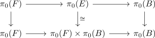
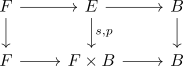

left split fiber sequence in Anima induces split
Proposition
Let $F \rightarrow E \rightarrow B$ be a left split fiber sequence in category of Anima. Assume furthermore that the split induces an isomorphism on $\pi_0$

Then $E \simeq F \times B$.
see also:
Proof
Let $s: E \rightarrow F$ be the split. Then consider

which is an equivalence upon applying $\pi_n$ (cf. left-splitting and direct sum splitting Lemma for general groups ) for $n \geq 1$ and for $n = 0$ it is an equivalence by the assumption above.
Remark
the condition above in particular holds if $\pi_0(B) = *$, which seems like a sound assumption for a fiber sequence.